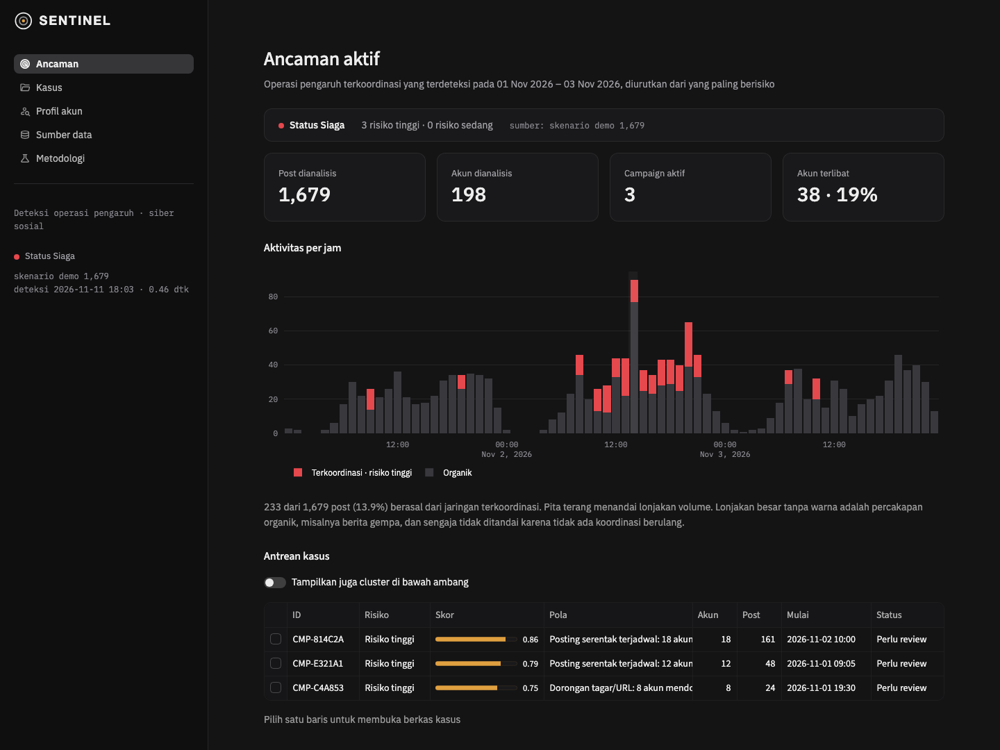
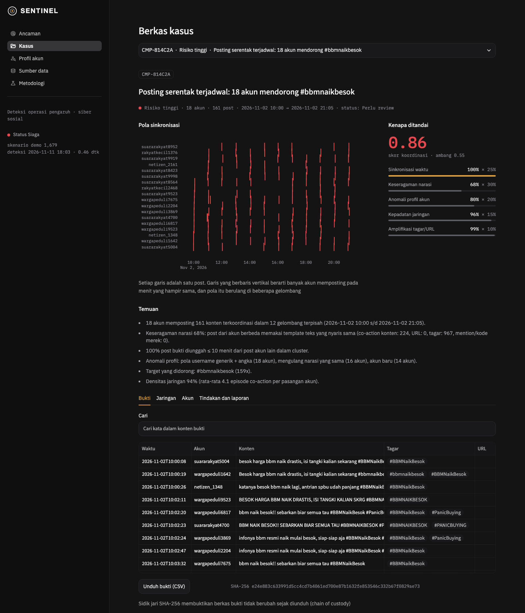

Kartika Cyber Hackathon 2026 · Kategori Siber Sosial · Ganesha8
Rekrutmen "jalur khusus", tautan pendaftaran palsu, disebar puluhan akun dalam hitungan menit.
Teks divariasikan, huruf 𝐆𝐀𝐌𝐄𝟏𝟗𝟏, angka ➋➐, homoglyph VlKlNG27, dieja u b e t 9 6.
Institusi negara harus netral politik dan bisa menjelaskan setiap temuan ke pimpinan.
Alat berbasis volume menandai berita gempa dan kampanye buzzer sekaligus. Analis tenggelam dalam alarm palsu.
Akun berbeda memposting narasi mirip, URL sama, atau kode merek langka yang sama hampir bersamaan.
Kelompok yang sama beraksi lagi di gelombang lain. Ribuan orang membahas gempa, tetapi tidak dengan kelompok yang sama berulang kali.
Templat teks tetap sambil memutar target, bahkan bila tersebar berhari-hari tanpa keserempakan.
Tanpa data latih: langsung bekerja pada narasi baru hari ini, dan netral terhadap opini.


NFKC, angka dekoratif, semua aksara, slang, kunci homoglyph
TF-IDF char 3–5; jendela 20 menit: teks mirip, URL, mention/kode merek
Edge hanya bila pasangan ≥ 2 episode atau motif ≥ 2 gelombang
Graf templat ↔ target dengan syarat rotasi
Memisahkan operasi
Ambang 0,55 · tinggi ≥ 0,75 · analis memutuskan
Python · SQLite · scikit-learn · networkx · Streamlit · Plotly. Data live: TikTok, YouTube, X, Threads, Instagram (ScrapeCreators), Mastodon. Unggah CSV/JSON untuk jaringan tertutup.
±8.000 komentar TikTok Indonesia dari 95 video, akun spam judi online diperiksa manual.
| Versi | Yang ditemukan di data asli | Perbaikan |
|---|---|---|
| v1 | Huruf Thai, emoji, unicode "fancy" terbuang; yang berulang adalah kelompok, bukan pasangan | NFKC + semua aksara; kode merek; motif lintas gelombang |
| v2 | VlKlNG27 ≠ 𝐕𝐈𝐊𝐈𝐍𝐆➋➐; laki2 dikira kode merek; spam "tetes lambat" recall 0 % | Kunci skeleton; pengecualian kata ulang; detektor operasi templat |
| v3 | Kode dibekukan, hash dicatat, baru data uji ditarik → F1 94 % | |
F1 · 2.002 komentar held-out · 69 akun spam
| Akun dituduh salah | |
|---|---|
| SENTINEL | 0 |
| Filter teks kembar | 124 |
| Pemantau lonjakan | 1.617 |
6 operasi judi online tertangkap. Slogan politik yang diulang 7 akun tidak ditandai: tidak ada bukti koordinasi.
@<KODE> คืออะไรหรอ ("kode ini apa?"), kode berganti tiap gelombang.
Akun bernama wajar menulis 💜 suka banget sama editingnya! + mention merek, berulang di hari berbeda.
Puluhan akun selama berminggu-minggu memutar 10–15 kode merek. Tidak ada keserempakan sama sekali.
Ketiganya kini jadi tes regresi otomatis. Benchmark sintetis tetap terjaga: F1 100 / 100 / 95 % di tiga tingkat penyamaran.
Python + SQLite, tanpa GPU dan tanpa cloud. Satu perintah ./run.sh. 17 tes otomatis.
Menilai perilaku, bukan opini. Tidak ada tindakan otomatis. Mode Presentasi menyamarkan username.
Hash SHA-256, run dan keputusan analis tercatat, parameter di satu berkas konfigurasi.
Berikutnya: lensa co-share · Telegram & near-real-time · IndoBERT untuk parafrase berat · deteksi meme duplikat · RBAC dan audit log